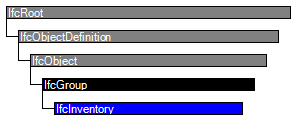

Natural language names
 | Inventar |
 | Inventory |
 | Inventaire |
| Inventar |
| Inventory |
| Inventaire |
| Item | SPF | XML | Change | Description | IFC2x3 to IFC4 |
|---|---|---|---|---|
| IfcInventory | ||||
| OwnerHistory | MODIFIED | Instantiation changed to OPTIONAL. | ||
| PredefinedType | X | MODIFIED | Name changed from InventoryType to PredefinedType. Instantiation changed to OPTIONAL. | |
| Jurisdiction | MODIFIED | Instantiation changed to OPTIONAL. | ||
| ResponsiblePersons | MODIFIED | Instantiation changed to OPTIONAL. | ||
| LastUpdateDate | X | X | MODIFIED | Type changed from IfcCalendarDate to IfcDate. Instantiation changed to OPTIONAL. |
An inventory is a list of items within an enterprise.
Various types of inventory can be included. These are identified by the range of values within the inventory type enumeration which includes space, asset, and furniture. User defined inventories can also be defined for lists of particular types of element such as may be required in operating and maintenance instructions. Such inventories should be constrained to contain a list of elements of a restricted type.
There are a number of actors that can be associated with an inventory, each actor having a role. Actors within the scope of the project are indicated using the IfcRelAssignsToActor relationship in which case roles should be defined through the IfcActorRole class; otherwise principal actors are identified as attributes of the class. In the existence of both, direct attributes take precedence.
There are a number of costs that can be associated with an inventory, each cost having a role. These are specified through the CurrentValue and OriginalValue attributes.
HISTORY New entity in IFC2.0.
IFC4 CHANGE All attributes optional, Where Rule removed.
| # | Attribute | Type | Cardinality | Description | C |
|---|---|---|---|---|---|
| 6 | PredefinedType | IfcInventoryTypeEnum | [0:1] | A list of the types of inventories from which that required may be selected. | X |
| 7 | Jurisdiction | IfcActorSelect | [0:1] | The organizational unit to which the inventory is applicable. | X |
| 8 | ResponsiblePersons | IfcPerson | S[1:?] | Persons who are responsible for the inventory. | X |
| 9 | LastUpdateDate | IfcDate | [0:1] |
The date on which the last update of the inventory was carried out. | X |
| 10 | CurrentValue | IfcCostValue | [0:1] | An estimate of the current cost value of the inventory. | X |
| 11 | OriginalValue | IfcCostValue | [0:1] | An estimate of the original cost value of the inventory. | X |

| # | Attribute | Type | Cardinality | Description | C |
|---|---|---|---|---|---|
| IfcRoot | |||||
| 1 | GlobalId | IfcGloballyUniqueId | [1:1] | Assignment of a globally unique identifier within the entire software world. | X |
| 2 | OwnerHistory | IfcOwnerHistory | [0:1] |
Assignment of the information about the current ownership of that object, including owning actor, application, local identification and information captured about the recent changes of the object,
NOTE only the last modification in stored - either as addition, deletion or modification. | X |
| 3 | Name | IfcLabel | [0:1] | Optional name for use by the participating software systems or users. For some subtypes of IfcRoot the insertion of the Name attribute may be required. This would be enforced by a where rule. | X |
| 4 | Description | IfcText | [0:1] | Optional description, provided for exchanging informative comments. | X |
| IfcObjectDefinition | |||||
| HasAssignments | IfcRelAssigns @RelatedObjects | S[0:?] | Reference to the relationship objects, that assign (by an association relationship) other subtypes of IfcObject to this object instance. Examples are the association to products, processes, controls, resources or groups. | X | |
| Nests | IfcRelNests @RelatedObjects | S[0:1] | References to the decomposition relationship being a nesting. It determines that this object definition is a part within an ordered whole/part decomposition relationship. An object occurrence or type can only be part of a single decomposition (to allow hierarchical strutures only). | X | |
| IsNestedBy | IfcRelNests @RelatingObject | S[0:?] | References to the decomposition relationship being a nesting. It determines that this object definition is the whole within an ordered whole/part decomposition relationship. An object or object type can be nested by several other objects (occurrences or types). | X | |
| HasContext | IfcRelDeclares @RelatedDefinitions | S[0:1] | References to the context providing context information such as project unit or representation context. It should only be asserted for the uppermost non-spatial object. | X | |
| IsDecomposedBy | IfcRelAggregates @RelatingObject | S[0:?] | References to the decomposition relationship being an aggregation. It determines that this object definition is whole within an unordered whole/part decomposition relationship. An object definitions can be aggregated by several other objects (occurrences or parts). | X | |
| Decomposes | IfcRelAggregates @RelatedObjects | S[0:1] | References to the decomposition relationship being an aggregation. It determines that this object definition is a part within an unordered whole/part decomposition relationship. An object definitions can only be part of a single decomposition (to allow hierarchical strutures only). | X | |
| HasAssociations | IfcRelAssociates @RelatedObjects | S[0:?] | Reference to the relationship objects, that associates external references or other resource definitions to the object.. Examples are the association to library, documentation or classification. | X | |
| IfcObject | |||||
| 5 | ObjectType | IfcLabel | [0:1] |
The type denotes a particular type that indicates the object further. The use has to be established at the level of instantiable subtypes. In particular it holds the user defined type, if the enumeration of the attribute PredefinedType is set to USERDEFINED.
| X |
| IsDeclaredBy | IfcRelDefinesByObject @RelatedObjects | S[0:1] | Link to the relationship object pointing to the declaring object that provides the object definitions for this object occurrence. The declaring object has to be part of an object type decomposition. The associated IfcObject, or its subtypes, contains the specific information (as part of a type, or style, definition), that is common to all reflected instances of the declaring IfcObject, or its subtypes. | X | |
| Declares | IfcRelDefinesByObject @RelatingObject | S[0:?] | Link to the relationship object pointing to the reflected object(s) that receives the object definitions. The reflected object has to be part of an object occurrence decomposition. The associated IfcObject, or its subtypes, provides the specific information (as part of a type, or style, definition), that is common to all reflected instances of the declaring IfcObject, or its subtypes. | X | |
| IsTypedBy | IfcRelDefinesByType @RelatedObjects | S[0:1] | Set of relationships to the object type that provides the type definitions for this object occurrence. The then associated IfcTypeObject, or its subtypes, contains the specific information (or type, or style), that is common to all instances of IfcObject, or its subtypes, referring to the same type. | X | |
| IsDefinedBy | IfcRelDefinesByProperties @RelatedObjects | S[0:?] | Set of relationships to property set definitions attached to this object. Those statically or dynamically defined properties contain alphanumeric information content that further defines the object. | X | |
| IfcGroup | |||||
| IsGroupedBy | IfcRelAssignsToGroup @RelatingGroup | S[0:?] | Reference to the relationship IfcRelAssignsToGroup that assigns the one to many group members to the IfcGroup object. | X | |
| IfcInventory | |||||
| 6 | PredefinedType | IfcInventoryTypeEnum | [0:1] | A list of the types of inventories from which that required may be selected. | X |
| 7 | Jurisdiction | IfcActorSelect | [0:1] | The organizational unit to which the inventory is applicable. | X |
| 8 | ResponsiblePersons | IfcPerson | S[1:?] | Persons who are responsible for the inventory. | X |
| 9 | LastUpdateDate | IfcDate | [0:1] |
The date on which the last update of the inventory was carried out. | X |
| 10 | CurrentValue | IfcCostValue | [0:1] | An estimate of the current cost value of the inventory. | X |
| 11 | OriginalValue | IfcCostValue | [0:1] | An estimate of the original cost value of the inventory. | X |
Group Assignment
The Group Assignment concept applies to this entity as shown in Table 238.
| ||||
Table 238 — IfcInventory Group Assignment |
| # | Concept | Model View |
|---|---|---|
| IfcRoot | ||
| Software Identity | Common Use Definitions | |
| Revision Control | Common Use Definitions | |
| IfcObject | ||
| Object Occurrence Predefined Type | Common Use Definitions | |
| IfcGroup | ||
| IfcInventory | ||
| Group Assignment | Common Use Definitions | |
<xs:element name="IfcInventory" type="ifc:IfcInventory" substitutionGroup="ifc:IfcGroup" nillable="true"/>
<xs:complexType name="IfcInventory">
<xs:complexContent>
<xs:extension base="ifc:IfcGroup">
<xs:sequence>
<xs:element name="Jurisdiction" nillable="true" minOccurs="0">
<xs:complexType>
<xs:group ref="ifc:IfcActorSelect"/>
</xs:complexType>
</xs:element>
<xs:element name="ResponsiblePersons" nillable="true" minOccurs="0">
<xs:complexType>
<xs:sequence>
<xs:element ref="ifc:IfcPerson" maxOccurs="unbounded"/>
</xs:sequence>
<xs:attribute ref="ifc:itemType" fixed="ifc:IfcPerson"/>
<xs:attribute ref="ifc:cType" fixed="set"/>
<xs:attribute ref="ifc:arraySize" use="optional"/>
</xs:complexType>
</xs:element>
<xs:element name="CurrentValue" type="ifc:IfcCostValue" nillable="true" minOccurs="0"/>
<xs:element name="OriginalValue" type="ifc:IfcCostValue" nillable="true" minOccurs="0"/>
</xs:sequence>
<xs:attribute name="PredefinedType" type="ifc:IfcInventoryTypeEnum" use="optional"/>
<xs:attribute name="LastUpdateDate" type="ifc:IfcDate" use="optional"/>
</xs:extension>
</xs:complexContent>
</xs:complexType>
ENTITY IfcInventory
SUBTYPE OF (IfcGroup);
PredefinedType : OPTIONAL IfcInventoryTypeEnum;
Jurisdiction : OPTIONAL IfcActorSelect;
ResponsiblePersons : OPTIONAL SET [1:?] OF IfcPerson;
LastUpdateDate : OPTIONAL IfcDate;
CurrentValue : OPTIONAL IfcCostValue;
OriginalValue : OPTIONAL IfcCostValue;
END_ENTITY;
 Instance diagram
Instance diagram Link to this page
Link to this page